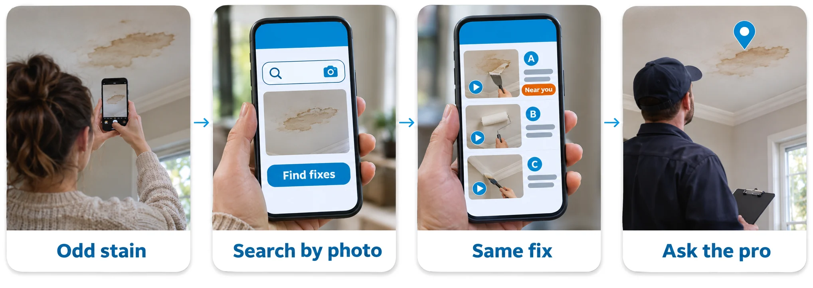

Find a Similar Fix




- Problem
- I search my problem and cannot find who has fixed one like it near me.
- Who has it
- Homeowners with a strange noise or leak, and the pros who have fixed it.
- Nearest evidence
- No post found yet. Nearest: BrightLocal, 2026-10-21